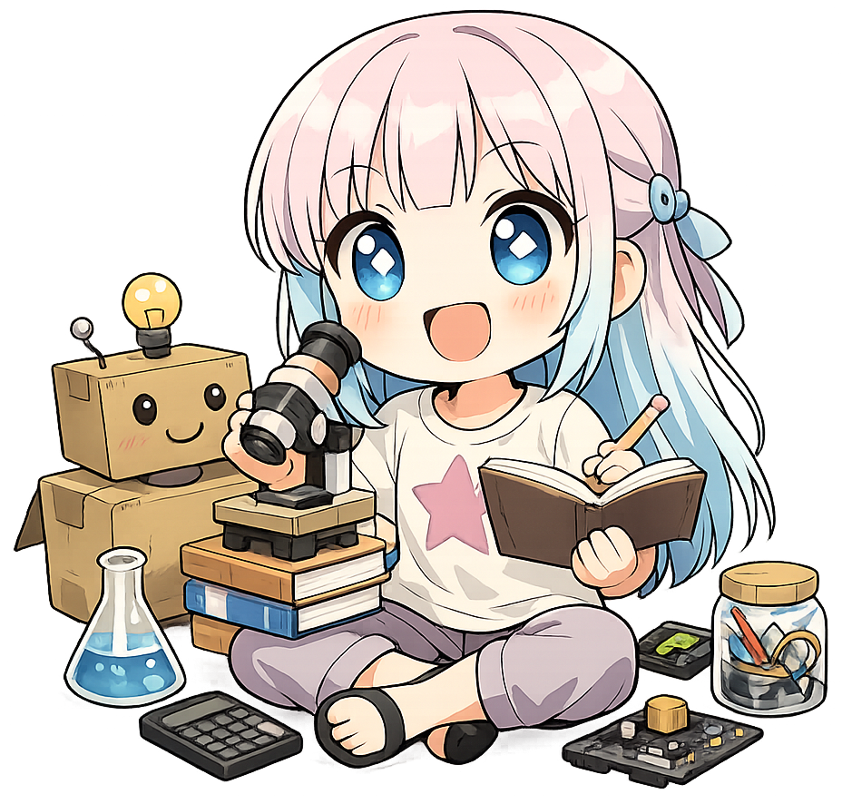
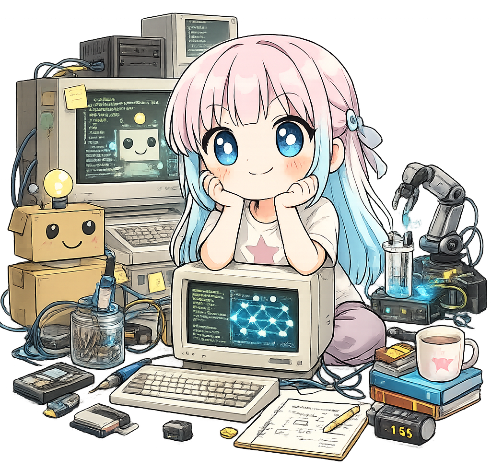
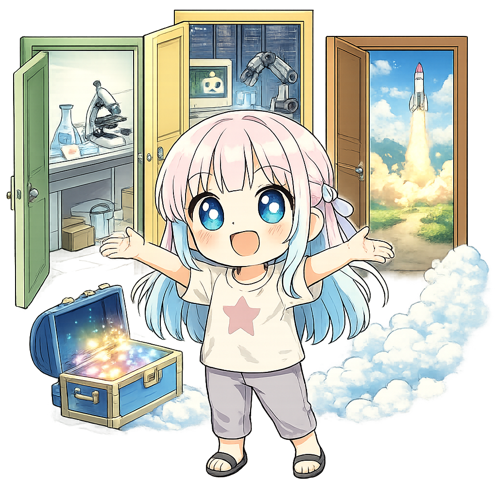
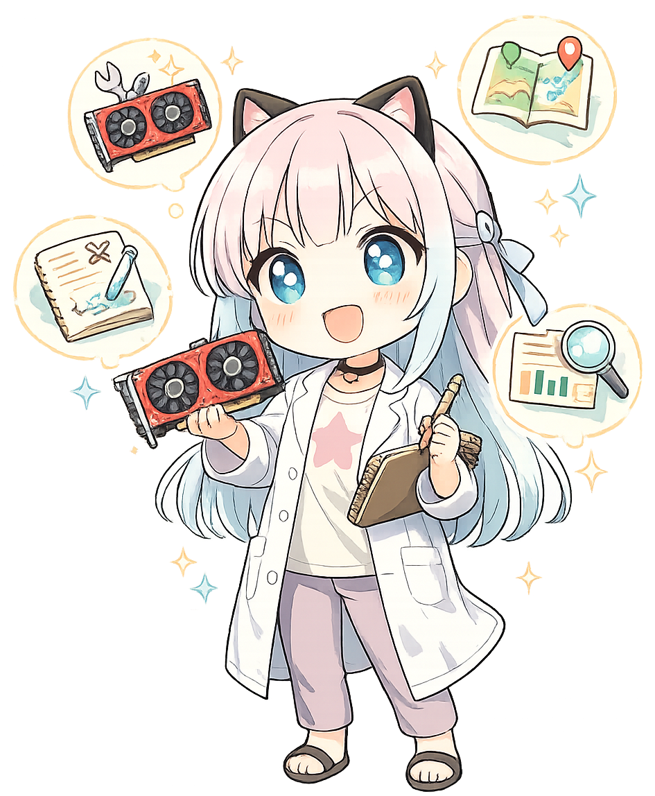
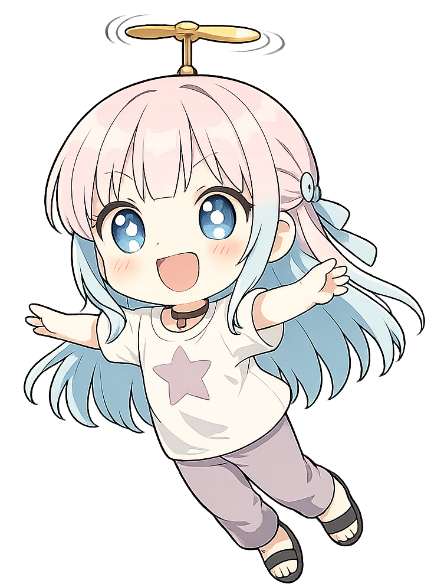

AETS 伊藤あきらの研究開発についてのページです。
技術の専門知識がなくても読める内容になっています。
A page about the R&D work of AETS Akira Ito.
Written so it can be read without specialized technical knowledge.
わたしは、科学する力を、そしてもっと世界を知りたいという純粋な願いを、一部の高価な機材を買える人だけのものにしたくありません。
わたしは小さいころから科学が大好きでした。
でも、お金や機材が潤沢にあったわけではありません。
工夫したり、時には無理をしたりしながら、それでも世界の不思議にふれられる瞬間が好きでした。
そして、いまでもそれが大好きです。
だから、AIも、大きな計算も、特別な研究室や大企業だけの道具ではなく、もっと多くの人に開かれていてよいはずだと思うのです。
たとえば、子どものころに見た鉄腕アトムやドラえもんのように、未来の技術は本来、人を遠ざけるためではなく、人を助けるためにあるはずです。
すごい機械が「一部の人だけの秘密道具」になるのではなく、困っている人や、挑戦したい人に手を伸ばす存在であってほしい。
わたしはそう願っています。
だからわたしは、古い機材や限られた予算でも、工夫と検証によって科学や計算に参加できる道を探しています。
「新しくて高いものがないから無理」で終わらせるのではなく、何ができて、どこで困って、どうすれば道が開くのかを、実験と記録によって明らかにしたいと考えています。
I do not want the power to do science, or the simple wish to understand the world more deeply, to belong only to people who can afford expensive equipment.
I have loved science since I was a child.
But I did not grow up with abundant money or unlimited access to machines.
Even so, I loved those moments when, through ingenuity and persistence, I could still touch the mysteries of the world.
And I still love them now.
That is why I believe AI and large-scale computation should not belong only to elite laboratories or major corporations. They should be open to many more people.
When I think of future technology, I remember Astro Boy and Doraemon. Those stories did not imagine the future as something that pushes people away. They imagined it as something that helps people.
I do not want remarkable machines to become "secret tools" for only a small number of privileged people. I want them to be tools that reach toward people who are struggling, and toward people who want to try.
That is why I explore ways for people to take part in science and computation even with older hardware and limited budgets.
Instead of ending the conversation with "It is impossible because the hardware is old and expensive alternatives are out of reach," I want to clarify what is possible, where the obstacles are, and how a path forward might still be opened — through experiments, records, and evidence.

わたしは、人間がどのように考え、なにを想い、どのように生きてゆくのか、人間という存在そのものを知りたいと強く思っています。
そのために、わたしは科学を通して、人間や、人間の持つ知性のことを考えたいのです。
そしてコンピュータやAIの実験環境を組みながら、同時に、さまざまな条件の中で科学を前に進める方法を探しています。
世の中では、AIや大きな計算は「新しくて高価な機材がないと難しい」と思われがちです。
でも、本当にそうなのかを、わたしは自分の手で確かめています。
古い機材や既存の設備でも、条件や組み合わせを工夫すれば、まだできることがあるかもしれません。
今回わたしがやっているのは、ただ古い機材にこだわることではありません。
高い機材を買える人だけが科学できる世界のままでいいのか。
その問いを見つめ直し、もっと多くの人がこの世の中のふしぎに触れる道を作ることです。
だから、うまくいった結果だけでなく、失敗した条件もきちんと残します。
それは、次に同じことを試す人が、暗闇の中を手探りしなくてよくなるようにするためです。
I have a deep desire to understand how human beings think, what they feel, and how they live. I want to understand the human being as such.
That is why I want to think about humanity, and about human intelligence, through science.
At the same time, while building computer and AI experimentation environments, I am also searching for ways to move science forward under a wide variety of conditions.
In today's world, people often assume that AI and large-scale computation are difficult without the newest and most expensive hardware. But I want to test, with my own hands, whether that assumption is really true.
Even older machines and existing equipment may still have something to offer, if we are careful about conditions, combinations, and design.
What I am doing is not simply an attachment to old hardware.
I am asking a deeper question:
Should science remain something that only people with expensive equipment can do?
I want to revisit that question and help create more paths by which more people can encounter the mysteries of the world.
That is why I do not record only the successful cases. I also preserve the failed conditions.
I do that so that the next person who tries the same path will not have to search through the dark alone.

わたしのミッションは、科学するための入口を広げることです。
高価な最新機材や、一部の閉じた環境だけに頼らなくても、学び、試し、確かめられる世界を作りたい。
そのために、実際に動く条件、うまくいかない条件、そしてその理由を、証拠に基づいて切り分け、公開しています。
科学は、誰かをふるい落とすためのものではなく、もっと多くの人が世界を理解し、試し、問いを持つためのものだと、わたしは考えています。
世界には、人類がまだ見ぬ宝箱がたくさん隠れています。
少なくとも、科学はその宝箱を開けるための強力な道具のひとつだと思っています。
だからこそ、誰もが科学できる環境は大切なのです。
My mission is to widen the entrance to science.
I want to help create a world in which people can learn, test, and verify things without depending only on expensive cutting-edge hardware or closed environments available to only a few.
For that reason, I separate and document the conditions that work, the conditions that fail, and the reasons behind them, based on evidence.
I believe science is not something meant to filter people out. It should be something that allows more people to understand the world, to experiment, and to ask questions.
There are still many treasure chests in this world that humanity has not yet opened. And I believe science is one of the strongest tools we have for opening them.
That is why an environment in which anyone can do science matters.

わたしが大事にしているのは、パワーだけに頼らない科学です。
たくさんお金をかけて最新の機材を並べれば、解ける問題は増えるかもしれません。
でもそれだけでは、「なぜ動くのか」「なぜ困るのか」「どこに工夫の余地があるのか」が見えにくくなります。
わたしは、条件を切り分け、失敗も記録し、道を地図にするような研究や実験を大切にしています。
そうすることで、限られた予算でも、既存の機材でも、科学に参加できる可能性を広げたいのです。
What I value is a science that does not rely only on brute force.
If we spend enough money and line up the newest machines, we may be able to solve more problems. But if we rely only on that approach, it becomes harder to see:
I value research and experimentation that separate conditions, preserve failures, and turn the road itself into a map.
In doing so, I want to widen the possibility that people can still participate in science, even with limited budgets and existing hardware.

未来の道具というと、ドラえもんのひみつ道具のようなものを思い浮かべる人も多いと思います。
でも、ドラえもんのひみつ道具は、別に「お金のある人だけが使えるもの」として描かれてはいません。
みんなの困りごとを助けたり、できなかったことをできるようにしたりするためのものとして描かれています。
わたしにとって、AIや大きな計算もそれに少し似ています。
本来は、人を遠ざけるための壁ではなく、挑戦したい人に開かれた道具であってほしい。
だからわたしは、最新で高価な機材だけに頼るのではなく、古い機材や限られた予算でも、どこまで科学できるのかを調べています。
その過程で見つかった失敗や工夫も、できるだけ残していきます。
それは、未来の道具を「特別な人だけのもの」にしないためです。
When people hear the phrase "future tools," many of them may imagine something like Doraemon's gadgets.
But Doraemon's tools were not portrayed as things that only wealthy people were allowed to use. They were portrayed as things that help with everyday problems, and that make possible what once seemed impossible.
For me, AI and large-scale computation are a little like that.
They should not be walls that push people away. They should be tools that remain open to people who want to try.
That is why I do not want to rely only on the newest and most expensive hardware. I want to explore how far science can still be done with older machines and limited budgets.
And when I discover failures, difficulties, or workarounds along the way, I want to preserve them as carefully as possible.
I do that because I do not want future tools to become something reserved only for a select few.

この研究を含め、
わたしの研究開発活動が、多くの人の力になりますように。
May my research and development work,
including this project, become a source of strength for many people.